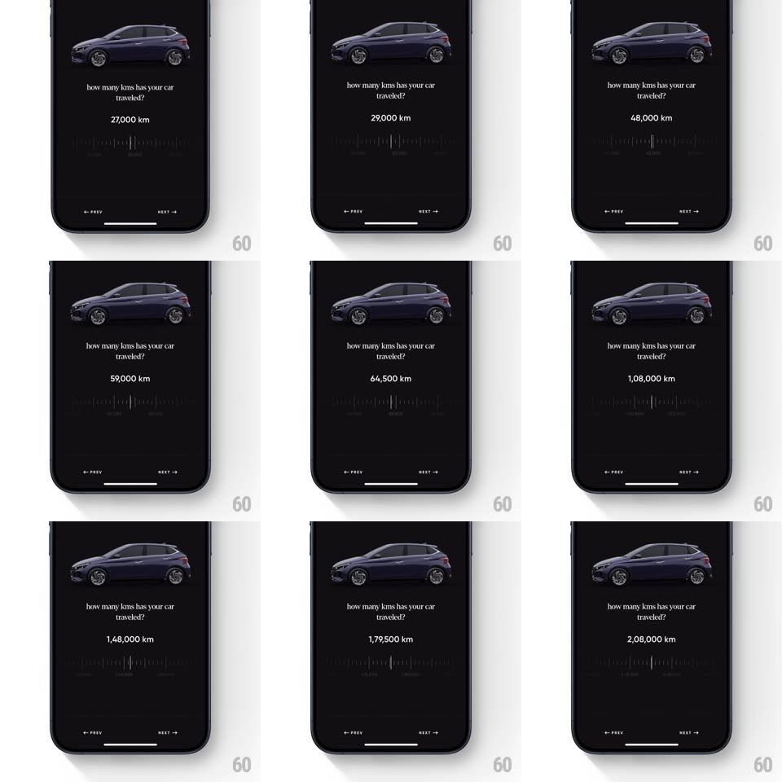

Media
Frame-by-frame

Rebuild this interaction 1:1: CRED's mileage ruler - a dark screen asks "how many kms has your car traveled?" under a side-profile car; dragging a horizontal ruler of tick marks updates the odometer value and spins the car's wheels in sync with the drag.

Rebuild this interaction 1:1: CRED's mileage ruler - a dark screen asks "how many kms has your car traveled?" under a side-profile car; dragging a horizontal ruler of tick marks updates the odometer value and spins the car's wheels in sync with the drag.
## Integration
Integration: stack-agnostic spec - springs given as stiffness/damping, timed motions as duration + curve; map every value to your framework and animation library of choice.
## Scene
Black screen: dark sedan side profile top, serif question, a large odometer readout ("48,000 km"), and a horizontal ruler - many thin vertical ticks of varying heights with sparse numeric labels (0, 50000, 100000...) and a center indicator line. "< PREV" / "NEXT >" bottom.
## Motion spec
Pattern: ruler slider driving wheels and odometer.
- Drag horizontally: the ruler strip pans 1:1 under the fixed center indicator; the odometer value updates live with Indian digit grouping (1,28,500).
- Tick heights alternate (long/short) and the ticks nearest the center indicator brighten and lengthen slightly (~15%) - a magnification band that travels with position.
- The car's wheels rotate proportionally to drag distance (drag right = wheels roll forward); wheel speed eases out after release with the ruler's momentum.
- Release: the ruler glides with momentum and decelerates (no hard snap - the range is continuous); the odometer eases to its final value.
- The center indicator pulses once (opacity 0.5 -> 1, 200ms) when the drag ends.
## Calibration
- Ruler spans 0 to 2,00,000+ km; labels appear every 25,000 and fade at the strip's edges.
- The car body never moves - only the wheels rotate.
## Reduced motion
Ruler pans without momentum; wheels static; odometer updates directly.
## Don't miss
- The wheel-rotation sync is the signature - it sells the "distance" metaphor.
- Values use Indian grouping (1,69,000 km) - keep the exact comma pattern.